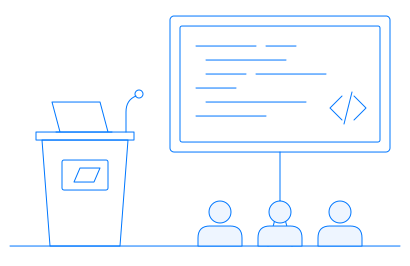
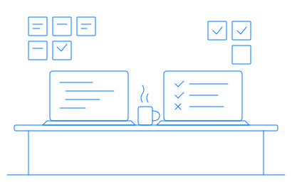
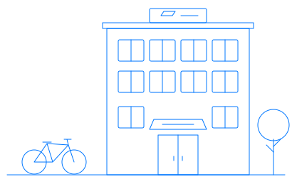
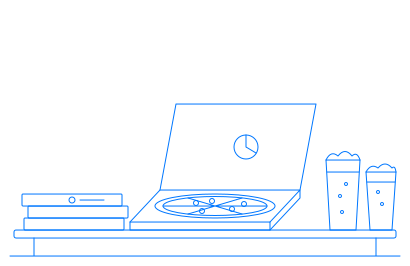

Praatjes
Iemand laat zien waar die mee bezig is. Soms een half uur, soms een lightning talk van vijf minuten.
Een meetup voor developers uit Arnhem en Nijmegen. Welke taal je schrijft maakt niet uit. Wanneer de volgende is, zie je op Meetup.
In Arnhem en Nijmegen zitten genoeg softwarebedrijven en informaticastudenten. Toch kwamen al die developers elkaar nergens tegen. De meetups die er waren gingen over één taal of waren niet voor iedereen open.
Wij kiezen geen taal. Een avond over Go of Haskell levert je soms meer op voor je PHP-project dan de zoveelste PHP-talk.

Iemand laat zien waar die mee bezig is. Soms een half uur, soms een lightning talk van vijf minuten.

Laptop open en samen iets proberen dat je nog niet kent. In december is dat meestal de Advent of Code.

Elke avond is bij een ander bedrijf in de regio. Meestal vertellen ze er ook iets over hoe ze werken.
Word lid van de groep, dan krijg je een mail als er een nieuwe avond gepland staat. Meestal is er ook bier en pizza.
Word lid op Meetup